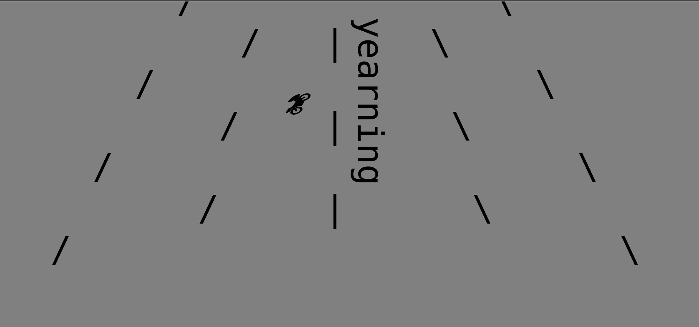
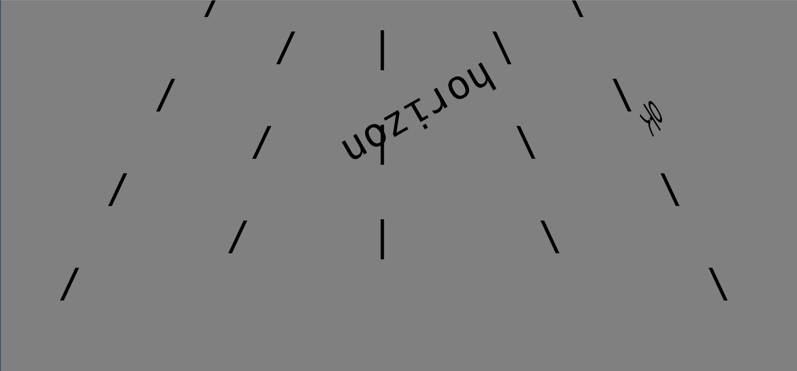

Lee Tusman
↩ Everyday
<
>
Title: Going The Distance
Year: 2023
Medium: Website
URL: going-the-distance↩
Description:
Going The Distance takes inspiration from the history of American fascination with the automobile and highways: On The Road; 1980s arcade game Outrun; Cory Arcangel's F1 Racer Mod; and my experience as a child driving the 1960s 'Turnpike cars' at the Pennsylvania amusement park 'Dutch Wonderland.' This web superhighway driving simulator imagines a future of infinite roads without traffic, a true american fantasy. The lyrics of the infinite song of the road unspool. Left-Right arrow keys to drive. Our protagonist may never arrive, but it's the journey that's the destination.
This is a prototype for Taper issue 11. Taper is a web-based journal for computational poetry and literary art, with the caveat for this issue that code for each work must fit within 2kilobytes. I used javascript and created text elements that constantly update to build the scene and generate the unfolding poem-story. I had this idea to design a game-like infinite driving sim in ASCII text, and this required extensive time code golf-ing i.e. reducing the code size to fit their requirement, through many coding tricks. I shortened variables to a single initial, removed the official 'let,const,var' declarations, changed bindings, and many others. I wanted to add additional features including web audio, obstacles and more colors but sadly I can't get these to fit within the size requirements constraints. This will work on mobile but is best on a wider screen.



 ©opyleft
©opyleft